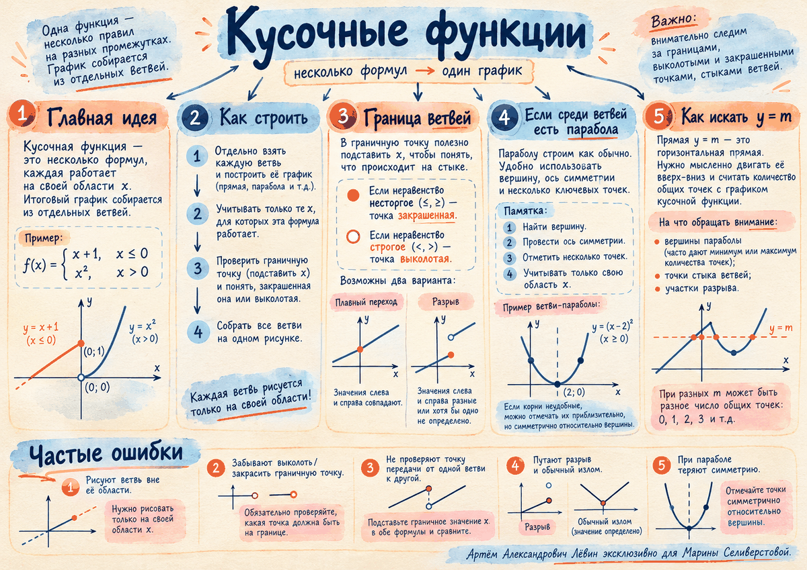

Закрашенная
Если условие содержит ≤ или ≥, граничное значение x входит в область ветви.
Занятие · 03.10.2026
Одна функция может состоять из нескольких ветвей. На занятии разобрали, как ограничивать каждую ветвь её областью, работать с открытыми и закрашенными точками, подключать параболу и исследовать число пересечений с горизонталью y=m.
Сначала строим знакомые графики, затем ограничиваем их по x.
Строгость неравенства определяет, принадлежит ли точка ветви.
Если условие содержит ≤ или ≥, граничное значение x входит в область ветви.
Если условие содержит < или >, граничное значение x для этой ветви запрещено.
Если соседняя ветвь содержит ту же точку, итоговая функция в этой координате определена. Поэтому «выколотость» одной ветви не означает автоматически дырку во всём графике.
Двигаем прямую вверх-вниз и следим, где меняется число пересечений.
Для функции из трёх линейных ветвей на занятии критическими уровнями стали m=−2 и m=1. Именно на этих высотах число общих точек меняется.
Цифровая лаборатория
Переключайте ровно те функции, которые разбирались на занятии, и наблюдайте, как меняется число пересечений.
Строим привычным способом, затем применяем ограничение ветви.
Для параболы y=x²+2x+3 вершина находится в точке (−1;2). В точке перехода x=−3 обе формулы дают 6, поэтому ветви встречаются в координате (−3;6).
Во втором разобранном примере парабола имела нули x=−1±√14 ≈ −4,74 и 2,74. На эскизе их можно отметить приближённо. Важно сохранить симметрию относительно оси x=−1 и отдельно вычислить граничную точку x=−5.
Проверка занимает меньше минуты.
Путь А · итог занятия
Для функции f(x)=−x−7 при x<−5 и f(x)=−x²−2x+13 при x≥−5 найдите вершину параболы, её нули в точном и приближённом виде, постройте обе ветви с учётом областей и определите все значения m, при которых y=m имеет с графиком ровно две общие точки.
Вершина (−1;14); нули x=−1±√14 ≈ −4,74 и 2,74; точка перехода (−5;−2), причём параболическая ветвь её содержит; m=−2 или m=14.
0 из 4 пунктов отмечено.
